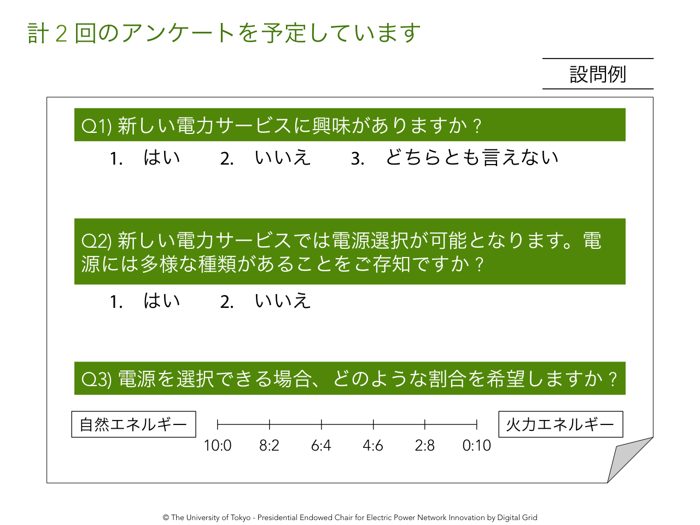

実証実験の目的
皆様から頂戴する電力消費量データ(1年間)、家庭内の温度・湿度(1年間)、家族構成などの需要家プロフィールは、電力需要予測手法の研究開発に活用されます。
電力価格シミュレーションや蓄電池を活用したピークカットなど、電力自由化後に展開するデジタルグリッドを用いたサービス設計のための貴重な足がかりとなります。
各種データを提供くださった参加者には、本実証実験の研究成果を報告いたします。
実証実験に参加できる方
2014年9月から2015年9月までの1年間、福島県郡山市にご在住の家庭のみ、本実証実験に参加できます。
その他の地域にご在住の方、工場やサービス業など家庭以外の方は、ご参加できません。
1年間の電力消費量・温湿度データ取得の他に、以下の作業にご協力いただく予定です。
- 家族構成などのプロフィールのご提供
- センサおよびルータの取り付け
- アンケート記入

スケジュール
以下のスケジュールを予定しております。
- 2014年9月頃
- 参加者を確定します。
- 2014年9月 ~
- 順次、デジタルグリッド関連設備の設置工事をします。
- 2015年3月頃
- 第一回アンケート調査・中間報告を予定しています。
- 2015年9月頃
- 第二回アンケート調査・最終報告を予定しています。
- 2015年9月 ~
- 順次、デジタルグリッド関連設備の撤去工事をします。
設置する機器
東京大学デジタルグリッド寄附講座が独自に開発したルーター、各種センサーをご家庭内に設置いたします。
- 電力センサ
- 分電盤に取り付け、消費電力・電圧・電流を測定します。
大きさ:150×66×50mm、重さ:150g - 温湿度センサ
- 家庭内の温度・湿度を測定します。
大きさ:110×60×30mm、重さ:100g程度 - スマートルータ
- 各センサのデータを無線を通じて収集し、家庭内LANを経由して伝送します。
大きさ:88×91×30mm、重さ:100g程度
実証実験の位置付け
実証実験の参加者より取得した電力消費量などのデータは、総括寄附講座の共同代表を務める坂田一郎教授と阿部力也特任教授の下で分析いたします。
また、本実証実験は文部科学省START事業の採択を受けております。
START事業とは、文部科学省主導のもと始められた大学発新産業創出拠点プロジェクトです。大学発ベンチャーの起業前段階から政府資金と民間の事業化ノウハウ等を組み合わせることにより、事業戦略・知財戦略を構築し、市場や出口を見据えて事業化を目指します。Digital Grid 参加者募集
デジタルグリッドは電力と情報を融合した次世代の送電網です。信頼性の高い送電網や、再生可能で柔軟性のある電源の普及を可能にします。
皆様の参加を心よりお待ちしております。